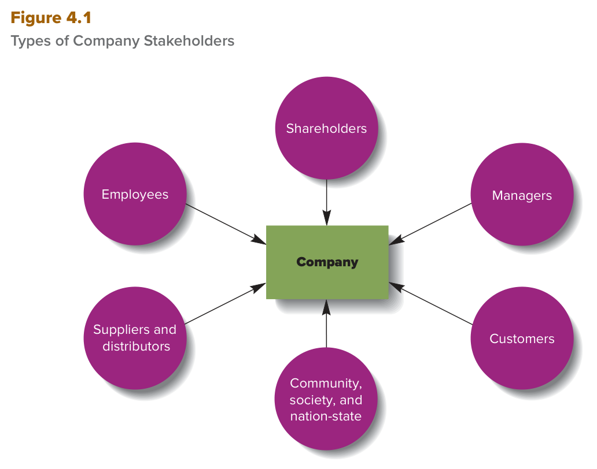
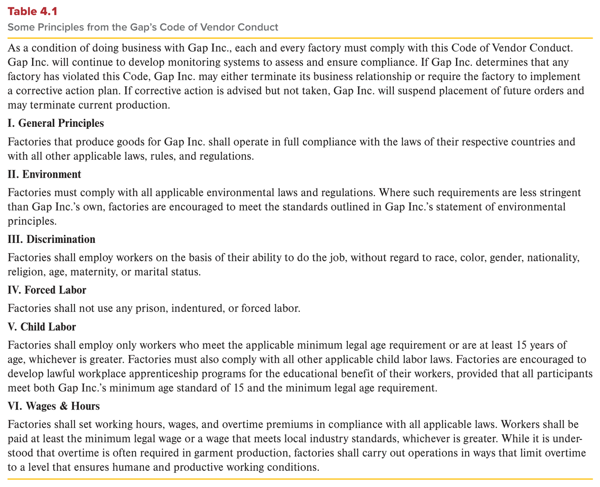

MGT 102 · Chapter 4 · Section 1 of 4:
The Nature of Ethics and Stakeholders
Objective LO4-1: Explain the relationship between ethics and the law.
Objective LO4-2: Differentiate between the claims of the different stakeholder groups affected by managers and their companies' actions.
Chapter 3 was about the manager as a person. Chapter 4 makes the picture bigger: what is right and what is wrong in a
manager's decisions, and which people those decisions affect. This first section lays the whole
foundation: what ethics is, how ethics is related to
the law (LO4-1), and who the stakeholders are — the groups that each give the company something and
claim something back (LO4-2).
Focus from now on the counts: the whole chapter
turns around the number 4 — four ethical rules, four sources of ethics, four approaches to social
responsibility. The only exception is what you study today: 6 stakeholder groups, and the
exam loves to mix these numbers. The second thing to memorize from page one: legal does not
necessarily mean ethical — understand that sentence and half of the LO4-1 questions
solve themselves. And take the definitions word for word from the EXAM BOXES.
The chapter opens with a question: How can doing good help a company do well? Its example is UPS. The company defines its role as not only earning profits by delivering packages, but also enabling economic growth and prosperity worldwide, and it serves companies and entrepreneurs in more than 220 countries. It gives part of its earnings to the UPS Foundation, led by Nicole (Nikki) Clifton, which links its work to the United Nations' Sustainable Development Goals. The Foundation's work is summed up in one word, HELP — four areas:
| Letter | Area | In Arabic |
|---|---|---|
| H | Health and humanitarian relief | صحة وإغاثة إنسانية |
| E | Equity and economic empowerment | عدالة وتمكين اقتصادي |
| L | Local community engagement | انخراط في المجتمع المحلي |
| P | Planet protection | حماية الكوكب |
The Foundation's numbers: more than $3 billion given since it started more than 70 years ago · in 2021 it gave $23 million in response to more than 30 humanitarian crises · during the pandemic it gave more than $20 million, and UPS employees delivered more than 1 billion doses of COVID-19 vaccines in 110 countries · and after the killings of George Floyd and Breonna Taylor it gave more than $3 million to programs for employment, education, and small business. The idea: the Foundation does not wait for the disaster; it works on disaster preparedness, using UPS's expertise in logistics.
Why would UPS managers care about rapid disaster response? The book gives three reasons: (1) they simply believe that helping others is the right thing to do; (2) it fits the company's vision of a prosperous economy — customers hit by a disaster will not be shipping many packages; (3) the innovation needed for disaster response also prepares the company to work more efficiently and meet needs that nobody has met.
Then the book says: nations, companies, and managers differ enormously in their commitment to stakeholders — the people who may benefit or be harmed by a manager's decisions. Some managers make ethical behavior their main priority; others pursue their own self-interest at the expense of their stakeholders.
The book opens the section with a situation: a colleague tells you that the manager of the accounting department is creating fake invoices from an unknown supplier, writing company checks to himself, and cashing them. Do you go to your supervisor? Do you persuade your colleague to tell HR or the CEO? Or do you ignore it because you are afraid of losing your job? That is exactly an ethical dilemma. The book says a dilemma comes up in two cases:
| # | The case | What you must do |
|---|---|---|
| 1 | You decide whether to act in a way that helps another person or group and is the right thing to do, even though it may go against your own self-interest | choose between the right thing and your own interest |
| 2 | You choose between two courses of action, knowing that whichever one you pick will harm one person or group, even if it helps another | choose the lesser of two evils |
How do you know you are in a dilemma? When your moral scruples come into play and make you hesitate, debate, and reflect on whether an action is right or good. Here are the three definitions:
| Term | The book's definition (memorize it word for word) | What it means |
|---|---|---|
| Ethical dilemma الورطة الأخلاقية |
The quandary people find themselves in when they have to decide if they should act in a way that might help another person or group even though doing so might go against their own self-interest. | the quandary a person falls into when helping someone else may go against his own interest. |
| Moral scruples الوازع الأخلاقي |
Thoughts and feelings that tell a person what is right or wrong; they are a part of a person's ethics. | thoughts and feelings that tell you this is right and this is wrong — and they are a part of your ethics. |
| Ethics الأخلاق |
The inner guiding moral principles, values, and beliefs that people use to analyze or interpret a situation and then decide what is the right or appropriate way to behave. | the inner moral principles, values, and beliefs you use to analyze a situation and decide the right way to behave. |
Ethics also tell you what behavior is inappropriate, and how to behave so you do not harm another person. And an organization's culture, when it establishes and promotes certain values, can play a role in defining ethical conduct for its members — that is the topic of the Management Insight box below.
The whole difficulty sits in one sentence: there are no absolute or indisputable rules or principles that decide whether an action is ethical or unethical. Different people and groups disagree about what is ethical, depending on their personal self-interest and their attitudes, beliefs, and values — the same concepts as Chapter 3. So the question is: how do we, and companies, decide what is ethical? The book's first answer is the law — the next concept.
Organizations usually handle ethics in one way: they write rules and teach them to employees. But researchers of human behavior found that it is more complex: people know the basic principles of fairness and respect, but even people who believe in them may be reluctant to act ethically in certain situations. For example, people are more willing to help someone in need when they are the only other person on the scene, and they make ethical choices more often when ethical values are mentioned explicitly.
The powerful implication of this situational approach: the organization can create the situations that encourage ethical behavior. How? (The book does not number them — here they are in five points.)
An ethical dilemma is the quandary people find themselves in when they have to decide if they should act in a way that might help another person or group and is the right thing to do, even though it might go against their own self-interest. A dilemma may also arise when a person has to choose between two different courses of action, knowing that whichever course they select will harm one person or group even though it may benefit another. The ethical dilemma here is to decide which course of action is the lesser of two evils.
Moral scruples are thoughts and feelings that tell a person what is right or wrong; they are a part of a person's ethics. Ethics are the inner guiding moral principles, values, and beliefs that people use to analyze or interpret a situation and then decide what is the right or appropriate way to behave.
The essential problem in dealing with ethical issues, and thus solving moral dilemmas, is that no absolute or indisputable rules or principles can be developed to decide whether an action is ethical or unethical.
Organizations also create an ethical climate when they ensure that rewards and consequences are aligned with ethical values.
The book's first answer to “how do we decide what is ethical?”: society as a whole, using the political and legal process, can lobby for and pass laws that say what people can and cannot do. Examples of laws that govern business: laws against fraud and deception, and laws about how companies treat their employees and customers. Laws also say what sanctions or punishments follow if they are broken.
Who passes the law? Every group in society lobbies according to its own interests and beliefs about right and wrong, and the group that can summon the most support passes the laws that fit its interests — not necessarily the group that is right.
The most important point: once a law is passed, the decision about the right behavior moves:
| From | To |
|---|---|
| the personally determined ethical realm the area that the person decides for himself |
the societally determined legal realm the area that society decides |
After that, if you do not conform to the law you can be prosecuted, and if you are found guilty you can be punished — and you have little say in the matter: your fate is in the hands of the court and its lawyers.
The golden rule: the book mentions a common ethical rule that people use to decide what is right: “Do unto others as you would have them do unto you” — treat people the way you want them to treat you. Its logic in the slavery example: if you deny freedom to others, you risk losing your own, just as stealing from others opens the door for them to steal from you.
Some behaviors most people see as unethical and believe should be illegal: murder, assault, rape, robbery, and reckless endangerment of others. But the ethics of other behaviors are open to dispute — like smoking tobacco or collecting guns: some people want them banned, others say it is up to the individual or group to decide. As beliefs change, people start to ask whether the law that bans a behavior is still appropriate, and they argue that a behavior being illegal does not make it unethical, so the law should change.
| Example | What happened |
|---|---|
| Slavery | It was ethical and legal in ancient Rome and Greece, and in the United States until the late 19th century. It was made illegal when those in power acknowledged that slavery degraded the meaning of being human. |
| Interracial marriage | In 1967 it was still illegal in 16 states. In June of that year the U.S. Supreme Court issued its unanimous Loving v. Virginia decision, which struck down those state laws as unconstitutional. |
| Marijuana (cannabis) | Owning or using it is illegal today in 4 states; the usual argument is that smoking it leads people to try more dangerous drugs. But it has been documented medically that it gives relief to cancer patients in chemotherapy and to people with epileptic seizures or anxiety disorders. Since 1996, 37 states have made it legal to prescribe it for medical purposes. And the book's photo: Illinois is one of 26 states that have legalized recreational use. |
| Decriminalization | It does not make the drug legal, but it removes the threat of prosecution even for uses that are not medical — and several states have initiatives to decriminalize having small amounts for personal use. |
| Britain, 1830 | A person could be executed for more than 350 different crimes, including sheep stealing. Today the death penalty is no longer legal in Britain. |
The conclusion the book states clearly: ethical beliefs lead to laws, but the laws themselves change or even disappear as beliefs change. So both ethical and legal rules are relative — no absolute or unvarying standards exist, people are caught up in moral dilemmas all the time, and that is why we have to make ethical choices.
| The case | The book's example |
|---|---|
| Laws were broken | Throughout the 2010s, scandals hit 6 companies: JPMorgan Chase, HSBC, Standard Chartered Bank, ING, Barclays, and Wells Fargo. Managers at some of them did five things: risky trades, interest rate manipulation, illegal trade facilitation, drug money laundering, and deception of customers. |
| No law was broken — but people were angry | The movement to end gun violence: in 2018, student survivors of a mass shooting at Marjory Stoneman Douglas High School in Parkland, Florida (14 students and 3 coaches and teachers were killed) founded March for Our Lives, which still leads the demand for gun reform. By late 2022 there had been more than 611 mass shootings (defined as at least 4 people shot, not counting the shooter). |
In the second case, no laws were broken, yet outrage was expressed over actions people saw as unethical. So the book
separates something illegal (you are punished for it) from something legal that people still see as
unethical. That difference is the heart of LO4-1.
Different groups in society lobby for which laws should be passed based on their own personal interests and beliefs about right and wrong. The group that can summon the most support can pass laws that align with its interests and beliefs. Once a law is passed, a decision about what the appropriate behavior is with regard to a person or situation is taken from the personally determined ethical realm to the societally determined legal realm.
In studying the relationship between ethics and law, it is important to understand that neither laws nor ethics are fixed principles that do not change over time. Ethical beliefs change as time passes; as they do so, laws change to reflect the changing ethical beliefs of a society.
While not making the drug legal, decriminalization removes the threat of prosecution even for uses that are not medically related.
Thus, both ethical and legal rules are relative: No absolute or unvarying standards exist to determine how we should behave, and people are caught up in moral dilemmas all the time. Because of this, we have to make ethical choices.
Just as a person has to work out right and wrong, so does a company. And when the law does not specify how a company should behave, its managers must decide the right or ethical way to behave toward the people and groups affected by their actions. These are its stakeholders. Because they can directly benefit or be harmed by the company's actions, the ethics of the company and its managers matter to them.
The book lists them in order — 6 groups — and for each one, what it gives the company and what it
claims in return (this table is the heart of LO4-2):
| # | Stakeholder | Gives the company | Claims |
|---|---|---|---|
| 1 | Shareholders | capital, by buying its stock — so they become its owners | the highest return on their investment, dividends, and managers who behave ethically and do not risk the company's good name |
| 2 | Managers | their skills, expertise, and experience (human capital) | good salaries and benefits, promotion and a career, stock options and bonuses tied to performance |
| 3 | Employees | their work in the company's departments and functions (research, sales, manufacturing) | rewards consistent with their performance, and a structure that rewards them fairly and without discrimination |
| 4 | Suppliers and distributors | supplier: the inputs. Distributor: gets the product to the final customer | supplier: to be paid fairly and promptly. Distributor: quality products at agreed-upon prices |
| 5 | Customers | they buy the products — without them there is no company | quality products at a fair price + good after-sales service |
| 6 | Community, society, and nation-state | the utilities, the workforce, the homes, and the schools, colleges, and hospitals the company needs | salaries, wages, and taxes that support the local economy, and behavior that does not harm the community |

This is Figure 4.1: a green box in the center labeled Company, with 6 purple circles around it, and each circle has an arrow pointing into the company: Shareholders (top), Managers, Customers, Community, society, and nation-state (bottom), Suppliers and distributors, and Employees. How to read it: the arrows run from the stakeholder to the company — each group supplies the company with a resource, and that is why it has a claim on it. What they ask about it: “How many groups?” = 6; and “Which one is NOT a stakeholder in the figure?” — competitors are not in the figure. And be careful: Suppliers and distributors is one circle, and Community, society, and nation-state is one circle — so the count is 6, not 8.
Shareholders have a claim because when they buy the stock they become its owners. When the founder of a company decides to publicly incorporate the business to raise capital, shares of the stock are issued, and the stock gives its buyers ownership of a certain percentage of the company and the right to any future stock dividends.
The book's example — MacKenzie Scott: she became one of the world's wealthiest women after her divorce from Amazon founder Jeff Bezos in 2019, which left her with a 4% stake in Amazon. Since 2020 she has given away more than $14 billion of her estimated $29 billion to organizations working on racial justice, higher education, and domestic violence, and in 2022 alone nearly $2 billion to 343 organizations. She signed the Giving Pledge — a promise to give away at least half of her fortune. The pledge was started by Warren Buffett and Bill and Melinda Gates more than 12 years ago, so the richest people would share their wealth with global causes (climate change, education, malnutrition, malaria).
The experts' warning: no company wants the reputation that March for Our Lives describes — that some businesses value profits over people. Experts warn companies not to ignore the movement, because its voice and influence keep growing, and it may single out companies that do little to reduce gun violence.
A box about nonprofit hospitals — an example of the pressure between money and reputation:
The people and groups affected by how a company and its managers behave are called its stakeholders. Stakeholders supply a company with its productive resources; as a result, they have a claim on and a stake in the company. Because stakeholders can directly benefit or be harmed by its actions, the ethics of a company and its managers are important to them.
Here we examine the claims of these stakeholders—shareholders; managers; employees; suppliers and distributors; customers; and community, society, and nation-state as Figure 4.1 depicts.
Shareholders have a claim on a company because when they buy its stock or shares they become its owners. Shareholders are interested in how a company operates because they want to maximize the return on their investment.
Why are managers a vital stakeholder group? Because they are responsible for using the company's financial, capital, and human resources to increase its performance and so its stock price. Their claim rests on bringing their skills, expertise, and experience — so they have the right to expect a good return on investing their human capital: good salaries and benefits, the prospect of promotion and a career, and stock options and bonuses tied to company performance.
But here is the special role: managers are the group that bears the responsibility to decide which goals the organization should pursue and how to use resources most efficiently. And here is the tension: they must juggle the interests of the stakeholders, including themselves. Some decisions benefit one group (managers and shareholders) and harm another (individual workers and local communities).
The layoffs example: in a downturn or when performance is weak, layoffs cut costs (a benefit to shareholders) at the expense of the employees laid off. During the pandemic, the Congressional Research Service estimates that non-farm payrolls lost more than 22 million jobs between January and April 2020, with unemployment at 14.8% — the highest rate since data collection began in 1948. After the vaccines, most jobs came back and unemployment fell to 3.7% near the end of 2022. The hardest-hit industries: hospitality, travel, and retail.
As you saw in Chapter 1, managers must be motivated to work in the interests of shareholders, and their behavior must be scrutinized. The problem: in many companies, corrupt managers focus on maximizing their own personal wealth, not shareholders' wealth, because laws are not strong enough to force them to behave ethically. That is why the Securities and Exchange Commission (SEC) — the government's top business watchdog — has begun to:
Its stated goal: to outlaw many actions that were previously classified as merely unethical — turning actions that were “only unethical” into illegal ones. That is exactly the ethics–law link from concept 2. For example, companies are now forced to reveal to shareholders the value of the stock options they give top executives and directors, and when they give them — and those who hide them can be prosecuted. In the 2010s, new SEC rules requiring companies to disclose many details of executive pay to investors made many boards stop CEO perks: free personal jet travel, membership in exclusive country clubs, and luxury accommodations on “business trips.”
The Volcker Rule: in 2010, Congress passed laws to prevent the actions of bank managers that led to the 2009 financial crisis; one of them, the Volcker Rule, reduces the chance that banks will put depositors' money at risk. In 2018 the banks asked for it to be revisited, and the final changes became official in January 2020, softening the regulations, especially for smaller financial institutions.
The CEO pay debate: according to the Economic Policy Institute, CEOs at the 350 biggest U.S. companies are paid nearly 399 times what the average worker earns — a 1,460% increase since 1978, while the average worker got only 18% over the same period. Average CEO compensation in 2021 = $27.8 million, and it jumped 11.1% in 2020–2021 even with millions of employees out of work. The book shows both sides:
| Against huge pay | For huge pay |
|---|---|
|
|
The question of ethics and fair pay is not limited to for-profit companies. The United States has almost 2 million private nonprofit charitable organizations, and charges that their managers acted unethically and even illegally have grown.
Managers are a vital stakeholder group because they are responsible for using a company's financial, capital, and human resources to increase its performance and thus its stock price. Managers have a claim on an organization because they bring to it their skills, expertise, and experience.
Managers are the stakeholder group that bears the responsibility to decide which goals an organization should pursue to most benefit stakeholders and how to make the most efficient use of resources to achieve those goals. In making such decisions, managers frequently must juggle the interests of different stakeholders, including themselves.
The SEC's goal is to outlaw many actions that were previously classified as merely unethical.
Unlike for-profit companies, which are required by law to provide detailed reports of their operations to their shareholders, nonprofits do not have shareholders, so the laws governing disclosure are far weaker.
Employees are the hundreds of thousands of people who work in the company's departments and functions (research, sales, and manufacturing). They expect rewards consistent with their performance. And the principal way for a company to be ethical toward them: an organizational structure that rewards them fairly and equitably for their contributions. In practice: four systems that must not discriminate and that employees believe are fair:
| # | System | In Arabic |
|---|---|---|
| 1 | Recruitment | التوظيف |
| 2 | Training | التدريب |
| 3 | Performance appraisal | تقييم الأداء |
| 4 | Reward systems | أنظمة المكافآت |
No company operates alone. Every company sits in a network of relationships with companies that supply it with inputs: raw materials, components, contract labor, and clients. It also depends on intermediaries such as wholesalers and retailers to get its products to the final customers.
| Group | Gives | Expects |
|---|---|---|
| Suppliers | the inputs | to be paid fairly and promptly |
| Distributors | getting the product to the final customer | quality products at agreed-upon prices |
A big ethical issue: many products sold in U.S. stores are outsourced to countries that do not have U.S.-style laws to protect the workers who make them. So every company must take an ethical position on how it gets and makes its products, and it usually publishes it on its website. The book's example: Gap.

This is Table 4.1: part of Gap's statement about its global ethics. At the top, a binding introduction: as a condition of doing business with Gap Inc., each and every factory must comply with the code, and Gap develops monitoring systems to make sure it does. If a factory violates it: Gap may end the business relationship or require a corrective action plan. And if corrective action is advised but not taken: Gap suspends future orders and may end current production. Below the introduction come six sections with Roman numerals — explained in the table under the picture. What they ask about it: “How many sections?” = 6; the minimum age (15 or the legal minimum, whichever is greater); the wage (the legal minimum or the local industry standard, whichever is greater); and what Gap does when a factory breaks the code.
| # | Section | What it says |
|---|---|---|
| I | General Principles | factories operate in full compliance with the laws of their countries and all other applicable laws, rules, and regulations |
| II | Environment | they follow environmental laws. And where the country's requirements are less stringent than Gap's, factories are encouraged (not forced) to meet Gap's environmental standards |
| III | Discrimination | hiring is based only on the ability to do the job — without regard to race, color, gender, nationality, religion, age, maternity, or marital status |
| IV | Forced Labor | no prison, indentured, or forced labor |
| V | Child Labor | only workers who meet the minimum legal age or are at least 15, whichever is greater. Apprenticeship programs are encouraged, as long as every participant meets both: 15 and the legal minimum |
| VI | Wages & Hours | hours, wages, and overtime follow the law. Pay is at least the minimum legal wage or a wage that meets local industry standards, whichever is greater. Overtime is often needed in garment production, but it must be limited to a level that keeps working conditions humane and productive |
Customers are often regarded as the most critical stakeholder group — because if a company cannot attract them to buy its products, it cannot stay in business. That is why managers and employees work to increase efficiency and effectiveness, to create loyal customers and attract new ones — by selling quality products at a fair price and giving good after-sales service. These practices serve not only the customers but also the communities and nations where they live and work.
Community = a physical location like a town or a city, or a social milieu like the ethnic neighborhoods where companies are located. The community gives the company the physical and social infrastructure it needs to operate: its utilities, its labor force, the homes where its managers and employees live, and the schools, colleges, and hospitals that serve them. The company gives back through salaries, wages, and taxes — and it often decides whether the community prospers or declines. And as far as it is involved in global trade, it affects all the countries it works in and the prosperity of the global economy.
The example of McDonald's and the fast-food industry:
Why do business ethics matter to the community? The failure of a company can have catastrophic effects on a community, a general decline in business affects a whole nation, and a large company's decision to pull out of a community can threaten its future. And some companies try to raise profits with actions that, although not illegal, can hurt communities and nations — like pollution: many U.S. companies cut costs by trucking their waste to Mexico, where it is legal to dump waste in the Rio Grande. The river is polluted from the Mexican side, but the U.S. side is also increasingly suffering the effects.
Employees expect to receive rewards consistent with their performance. One principal way that a company can act ethically toward employees and meet their expectations is by creating an organizational structure that fairly and equitably rewards employees for their contributions.
Suppliers expect to be paid fairly and promptly for their inputs; distributors expect to receive quality products at agreed-upon prices.
Customers are often regarded as the most critical stakeholder group because if a company cannot attract them to buy its products, it cannot stay in business.
Community refers to physical locations like towns or cities or to social milieus like ethnic neighborhoods in which companies are located.
Some companies may attempt to improve their profits by engaging in actions that, although not illegal, can hurt communities and nations.
The questions are in English because the exam is in English. Answer first, then open the solution. If you miss question 2, go back to the trap “legal ≠ ethical”; if you miss question 3, go back to the number of circles in Figure 4.1.
A. The situation has the exact condition of a dilemma: acting in a way that helps others and is the right thing to do, but against her own self-interest — and it is the book's own fake-invoice scenario. The trap in B: moral scruples are the thoughts and feelings that make her hesitate — a sign that she is in a dilemma, not the dilemma itself. C is a trap: an ethical climate is something the organization creates when it aligns rewards and consequences with ethical values, not a situation one person faces. And D comes from the topic of the law and drugs; it has nothing to do with this case.
C. The book gives you cases where no laws were broken and people were still angry (March for Our Lives), and dumping waste in the Rio Grande is legal in Mexico but hurts communities — so legal ≠ ethical. The trap: the question uses NOT, and A, B, and D are taken almost word for word from the book so that you rush and pick one of them. And in B, watch the direction of the arrow: from the personal ethical realm to the societal legal realm — which is correct here.
B. The six circles in Figure 4.1 are Shareholders, Managers, Employees, Suppliers and distributors, Customers, and Community, society, and nation-state — competitors are not one of them. The trap in A and C: long names that you may count as two or three groups, so you doubt they are “one of the six” — but each one is one circle in the figure. And D is a trap: you may think of managers as “the management itself” and not a stakeholder, but the book calls them a vital stakeholder group.
C. The book's sentence word for word: Customers are often regarded as the most critical stakeholder group — because without them the company cannot stay in business. The trap in A: shareholders have a claim because they are the owners, but the book does not call them most critical. B is the word trap: managers are vital, not most critical. And D: suppliers expect to be paid fairly and promptly and distributors expect quality at the agreed-upon price — nothing to do with buying the products.
B. Section V. Child Labor in Table 4.1 says word for word: the applicable minimum legal age requirement or are at least 15 years of age, whichever is greater. The trap in C: the same sentence but with lower instead of greater — always read the last word. A: the number 18 is not in the table at all. And D: apprenticeship programs are encouraged in the table, not a condition for hiring.
| Term | What it means | Watch out for |
|---|---|---|
| Ethical dilemma | The quandary of choosing between helping others (the right thing) and your own self-interest | a conflict with your interest, or choosing the lesser of two evils — not just any hard decision |
| The lesser of two evils | The second case of a dilemma: every choice harms someone | whichever course you pick harms one person or group |
| Moral scruples | Thoughts and feelings that tell a person what is right or wrong | a part of ethics, not another word for it |
| Ethics | The inner guiding moral principles, values, and beliefs used to decide the right way to behave | inner — and there are no absolute rules |
| Situational approach | The idea that whether people act ethically depends on the situation | from Management Insight: the organization can create situations that promote ethics |
| Ethical climate | Rewards and consequences aligned with ethical values | not just writing rules and teaching them |
| Ethical realm → legal realm | Once a law is passed, the decision moves from the person to society | from personal to societal — not the reverse |
| Decriminalization | Removing the threat of prosecution without making the drug legal | not legalization |
| “Do unto others as you would have them do unto you” | A common ethical rule people use to decide what is right | the book mentions it with the slavery example |
| Stakeholders | The people and groups that supply a company with its productive resources and so have a claim on and a stake in it | 6 groups; they supply the company |
| Shareholders | The owners, who bought the company's stock | they want the highest return on their investment |
| Managers (as stakeholders) | The group that decides the goals and the use of resources | vital; they juggle everyone's interests, including their own |
| Human capital | A manager's skills, expertise, and experience | the base of the manager's claim — not stock |
| Securities and Exchange Commission (SEC) | The government's top business watchdog | its goal: to outlaw … merely unethical actions |
| Volcker Rule | A rule that reduces the chance that banks put depositors' money at risk | softened in January 2020 for smaller institutions |
| The Giving Pledge | A promise to give at least half of one's fortune to charity | started by Buffett and the Gates; MacKenzie Scott signed it |
| Charity care (“required financial benefits”) | Free or reduced-cost hospital care for needy patients | the ACA requires it but sets no amount or eligibility; nonprofits 2.3% < for-profits 3.8% |
| Employees | The people who work in the company's departments and functions | rewards consistent with performance; 4 fair systems without discrimination |
| Suppliers | The companies that provide the inputs | paid fairly and promptly |
| Distributors (intermediaries) | Wholesalers and retailers that get products to the final customers | quality products at agreed-upon prices |
| Customers | The buyers of the company's products | the most critical stakeholder group — not shareholders |
| Community | Physical locations or social milieus where companies are located | both — not only the city |
| Code of Vendor Conduct (Gap) | Gap's rules that every factory must follow | 6 sections; whichever is greater twice (age 15 and the wage) |
| Corrective action plan | What Gap may require from a factory that breaks the code | the alternative to ending the relationship — not a fine |
These are the general English words on this page, not the management terms. Learn them and the textbook gets much easier to read.
| Word | Part of speech | العربية | Example sentence from this lesson |
|---|---|---|---|
| align | verb | يتماشى / يتوافقيعني يمشي على نفس الخط مع شي ثاني وما يعارضه | Organizations also create an ethical climate when they ensure that rewards and consequences are aligned with ethical values. |
| catastrophic | adjective | كارثييعني مصيبة كبيرة تخرّب كل شي حولها | The failure of a company can have catastrophic effects on a community. |
| comply | verb | يلتزم / يمتثليعني تمشي على القانون أو الشرط بالضبط وما تخالفه | As a condition of doing business with Gap Inc., each and every factory must comply with this Code of Vendor Conduct. |
| degrade | verb | يحطّ من قيمة / يهينيعني ينزّل من قدر الشي ويقلّل من احترامه | Slavery was made illegal when those in power acknowledged that slavery degraded the meaning of being human. |
| diligently | adverb | بجدّ واجتهاديعني تشتغل بتركيز وتعب وما تقصّر | Shareholders watch the company closely to ensure that management is working diligently to increase the company's profitability. |
| disclose | verb | يكشف / يفصح عنيعني تطلّع المعلومة للناس وما تخبّيها | In the 2010s, new SEC rules required companies to disclose many details of executive pay to investors. |
| disparity | noun | تفاوت / فجوةيعني فرق كبير بين شيئين المفروض يكونون قريبين من بعض | Many people argue that the growing disparity between the rewards given to CEOs and to other employees is unethical. |
| eligible | adjective | مؤهَّل / مستحقيعني الشروط تنطبق عليك وتستاهل تاخذ الشي | Hospitals must make reasonable efforts to identify whether patients are eligible before sending past-due bills to debt collectors. |
| equitably | adverb | بإنصافيعني كل واحد ياخذ حقه على حسب تعبه، بدون ظلم | A company can act ethically toward employees by creating an organizational structure that fairly and equitably rewards them for their contributions. |
| explicitly | adverb | صراحةً / بوضوحيعني تقولها بكلام واضح ومباشر، مو تلميح | People tend to make ethical choices more often when ethical values are mentioned explicitly. |
| hesitate | verb | يتردديعني توقف شوي قبل ما تسوي الشي لأنك مو متأكد | Moral scruples cause people to hesitate, debate, and reflect upon the correctness or goodness of a course of action. |
| indisputable | adjective | لا يقبل الجدليعني شي محسوم ما أحد يقدر يناقش فيه | No absolute or indisputable rules or principles can be developed to decide whether an action is ethical or unethical. |
| infrastructure | noun | بنية تحتيةيعني الأساسات اللي تمشي عليها الحياة: كهرب وطرق وموية ومدارس | A community provides a company with the physical and social infrastructure that allows it to operate. |
| juggle | verb | يوازن بين أشياء كثيرةيعني زي اللي يلعب بكذا كورة بالهوا، لازم ما يطيّح ولا وحدة | In making such decisions, managers frequently must juggle the interests of different stakeholders, including themselves. |
| lobby | verb | يضغط للتأثير على القراريعني تحاول تأثر على اللي يسوون القوانين عشان يطلع القرار لصالحك | Different groups in society lobby for which laws should be passed based on their own personal interests and beliefs. |
| outrage | noun | غضب شديد / سخطيعني زعل كبير من الناس على شي يشوفونه ظلم أو غلط | In other cases, no laws were broken, yet outrage was expressed over perceptions of unethical actions. |
| promptly | adverb | في الوقت / بدون تأخيريعني على طول، ما تأخّر الشي ولا تماطل فيه | Suppliers expect to be paid fairly and promptly for their inputs. |
| prosecute | verb | يلاحق قضائياًيعني يرفعون عليك قضية ويودّونك المحكمة | If you do not conform to the law, you can be prosecuted. |
| prosperity | noun | ازدهار / رخاءيعني الناس عايشين بخير والاقتصاد ماشي زين | UPS defines its role as enabling economic growth and prosperity worldwide. |
| quandary | noun | حيرة / ورطةيعني تكون محتار وما تدري وش تختار، وكل طريق صعب | An ethical dilemma is the quandary people find themselves in when they have to decide if they should act in a way that might help another person or group. |
| realm | noun | مجال / نطاقيعني المساحة أو العالم اللي يحكمه شي معيّن | Once a law is passed, the decision is taken from the personally determined ethical realm to the societally determined legal realm. |
| relative | adjective | نسبييعني يتغيّر حسب الزمان والناس، مو ثابت لكل أحد | Both ethical and legal rules are relative: no absolute or unvarying standards exist to determine how we should behave. |
| reputation | noun | سمعةيعني وش يقولون الناس عنك ووش صورتك عندهم | Shareholders want to ensure that managers are not risking investors' capital with actions that could hurt the company's reputation. |
| scrutinize | verb | يدقّق / يفحص بتمعّنيعني تراقب الشي بعين حادة وتدوّر على أي غلط | The SEC wants to increase the power of outside directors to scrutinize a CEO. |
| stringent | adjective | صارم / مشدّديعني القاعدة قوية وما فيها تساهل أبد | Where environmental requirements are less stringent than Gap Inc.'s own, factories are encouraged to meet Gap's standards. |
| summon | verb | يحشد / يجمعيعني تجمع الناس والدعم حولك عشان تقوى | The group that can summon the most support can pass laws that align with its interests and beliefs. |
Built from the text of the textbook Contemporary Management (Jones & George, McGraw Hill, 12th edition) —
Chapter 4: Ethics and Social Responsibility, section 1: Overview, The Nature of Ethics, Ethics and the Law, and
Stakeholders and Ethics, objectives LO4-1 and LO4-2 (pages 91–101), with the book's Summary and Review,
Figure 4.1, and Table 4.1.
Summarized only: from the chapter opener A Manager's Challenge (the UPS Foundation
and Nikki Clifton) only HELP, the main numbers, and the three reasons are taken; the Management Insight box (Embedding Ethics in
Organizational Culture) and the Ethics in Action box (Billing the Poor for Hospital Care) are given by their main points.
Ethical decision rules and why behave ethically (LO4-3, LO4-4) are in lesson 2, sources of managerial ethics
(LO4-5) in lesson 3, and approaches to social responsibility (LO4-6) in lesson 4.